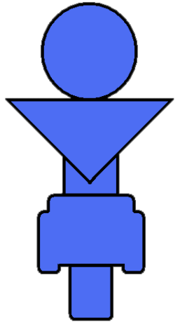
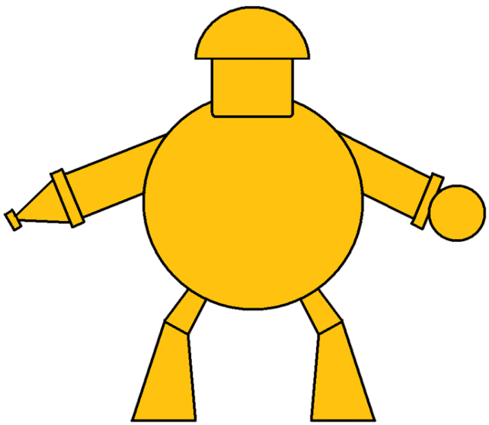

---
---
{% include chrisw/header.html %}
Watt Bodies
{% include chrisw/title.html %}
{% include chrisw/navbar.html %}
Robots
Players can choose to play as one of three robots. Players are free to change between the robots at anytime,
so long as no other player is currently using it. This allows the game to be played with less than 3 players.
 Zoomoid
Equipped with wheels, Zoomoid can move very fast and has the ability to run through conveyor belts.
This robot, however, cannot jump very high.
Hoveroid
Equipped with jet boots, Hoveroid can hover over the ground. This ability can be used to get to high areas the other robots can not reach.
This robot, however, is slower than Zoomoid.
 Dousoid
Dousoid is the slowest and biggest of the three robots. It has a landing pad on its head that Hoveroid can use as a platform to jump higher.
This robot, however, is the slowest and since it is so large, it cannot fit into small spaces.